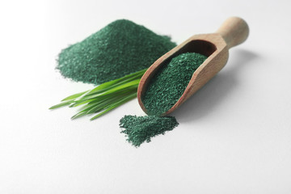
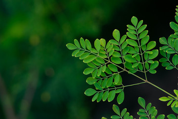
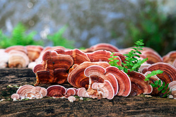
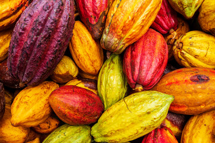

“Reemplazar suplementos aislados por esta mezcla fue clave. En un vaso tengo proteína vegetal, hierro y moringa sin azúcares añadidos.”
Fundamento diario de superalimentos reales
Nutrición todo en uno para el rendimiento diario
Espirulina Fusion combina espirulina, moringa, ganoderma y cacao en polvo instantáneo. Aporta proteína vegetal, clorofila, vitaminas A y K, hierro, calcio, magnesio y beta-glucanos sin azúcar añadida ni rellenos.
- Sin azúcares añadidos ni rellenos sintéticos.
- Más de 6 superalimentos en una sola mezcla instantánea.
- Se integra a tus recetas frías o calientes sin complicaciones.

Comunidad Natural Smart Drinks
Valorado por quienes buscan nutrición inteligente
Opiniones reales de clientes que integran un scoop diario de Espirulina Fusion para complementar su alimentación vegetal.
“Lo preparo con agua fría después de entrenar. La espirulina y el cacao hacen que quede suave y me aportan el magnesio que necesito.”
“Me gusta que el ganoderma sea real, nada sintético. Siento el shot más completo que cualquier multivitamínico en cápsula.”
Presentaciones reales para mantener tu hábito
Tres opciones listas para mezclar sin azúcares añadidos. Escoge la cantidad que se ajusta a tu rutina y recibe asesoría directa por WhatsApp.

60 g
Rinde cerca de 12 porciones de 5 g. Perfecto para probar la mezcla durante dos semanas.
120 g
Rinde aproximadamente 24 porciones. Ideal para integrar un scoop diario en tu rutina.
250 g
Rinde hasta 50 porciones. El formato recomendado para mantener la reserva de la familia.
Tu pedido
Agrega una presentación para comenzar tu pedido.
Unidades
0
Base de superalimentos
Seleccionamos superalimentos en polvo sin maltodextrina, saborizantes ni rellenos. Cada lote conserva el perfil nutricional natural de la planta original.
- Porción de 5 g que se mezcla en agua, jugo o leches vegetales en menos de 10 segundos.
- La espirulina aporta proteína vegetal completa, clorofila y hierro biodisponible.
- La moringa conserva vitaminas A y K, calcio y potasio de origen natural.
- Ganoderma y cacao entregan beta-glucanos, magnesio y polifenoles antioxidantes.
Proteína vegetal completa
La espirulina contiene aminoácidos esenciales y clorofila que apoyan energía y recuperación.
Vitaminas y minerales reales
La moringa aporta provitamina A, vitaminas K y E, además de calcio y potasio de origen vegetal.
Adaptógenos y defensa
El ganoderma ofrece beta-glucanos y polisacáridos de apoyo inmunológico, equilibrados con cacao rico en magnesio y antioxidantes.

Espirulina
Microalga con más del 60% de proteína vegetal, clorofila y hierro biodisponible que contribuye a la energía diaria.

Moringa
Hojas secas que aportan vitamina A, calcio y antioxidantes naturales para apoyar defensas y bienestar general.

Ganoderma
Extracto de reishi rico en polisacáridos y beta-glucanos, reconocidos por su acción adaptógena e inmune.

Cacao
Fuente de magnesio y polifenoles antioxidantes que suavizan el perfil del blend y suman beneficios diarios.
Hablemos por WhatsApp
Cuéntanos tu rutina, consumo actual y objetivo. Te guiamos con la porción adecuada, recetas sencillas y la entrega en Bogotá.